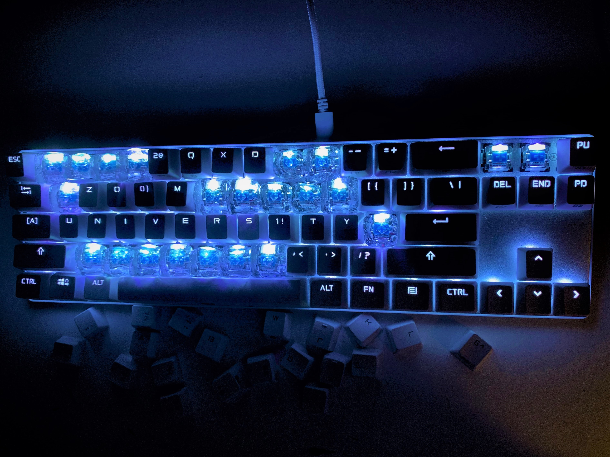

Jelly Keycaps
3D ART

"2QXD ZO0M UNIVERS1TY" (2020)
A project in casting and molding an object and replicating them. I made silicon cornstarch molds of key caps and replicated the key caps with Japanese red-algae based jelly, known as Kanten（寒天).
An expression of the fatigue I am starting to learn from this new form of online school; I feel like my brain is becoming jelly-like.